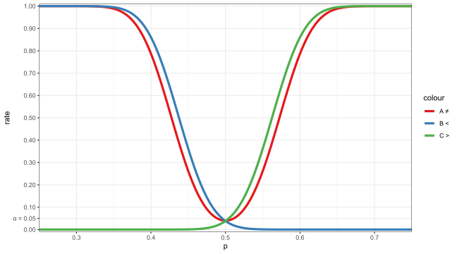
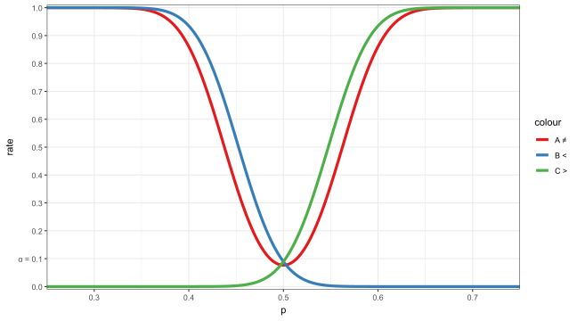
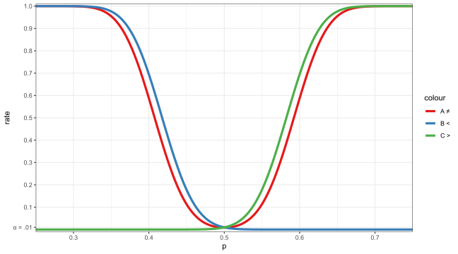
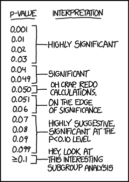

dbinom(8, size=8, prob=0.5)[1] 0.00390625Supposedly, R. A. Fisher invented hypothesis testing in 1935 when trying to test if British phycologist Muriel Bristol could tell if her tea was prepared “correctly”, i.e. if milk is added after brewing vs before (original paper).
Below is a slightly modified (for ease of demo) version of the original experiment:
8 cups are independently prepared, each with 50% chance of being done “correctly”
After tasting, Muriel correctly guesses all 8 cups as tea-first or milk-first.
Exercises:
Do you think she has sufficiently demonstrated she can distinguish between tea-first and milk-first? Give a p-value and write a brief intepretation.
Suppose the experiment is repeated with \(n\) cups, and again Muriel guesses all \(n\) correct. What’s the smallest value of \(n\) which would result in a significant test at the \(\alpha=0.05\) significance level? How about at \(0.10\) or \(0.01\)?
Let \(p=\) probability Muriel correctly identifies a given cup. Hypotheses:
Null: Muriel is guessing completely at random (\(p=0.5\))
Alt: Muriel has some ability to distinguish them (\(p>0.5\))
Note this is a binomial single proportions test from 240. Let \(X\) be number of cups correctly identified. Under null, \(X\sim\binom{8,0.5}\). Then, p-value can be found as \(\p{X\geq8}\), which is just \(\p{X=8}\) since she guessed all 8 out of 8 correct.
The result is quite significant, so we conclude Muriel can distinguish them. Now, what’s the smallest \(n\) necessary for each significance level if Muriel guesses all \(n\) correct?
# remember R distribution functions are all vectorized in all arguments!
dbinom(1:8, size=1:8, prob=0.5) # alternatively: 0.5^(1:8)[1] 0.50000000 0.25000000 0.12500000 0.06250000 0.03125000 0.01562500 0.00781250 0.00390625So only 4 cups are necessary for 0.10 significance level, 5 cups for 0.05, and 7 cups for 0.01.
Here’s the actual original experiment:
8 cups were prepared, 4 of them tea-first and the other 4 milk-first (this is known to the subject). Muriel was asked to identify the 4 cups that were tea-first (suppose you must pick exactly 4). Again, she correctly identified all cups. (Note this is no longer binomial!)
This time, using an MC approach, compute a p-value for the same hypotheses.
(hint: 1. use sample() to randomize cup guesses, 2. find distribution of number of correct guesses under null, 3. find p-value.) Answers (in stages):
Whether using a parametric method (e.g. binomial test, t-test) or an MC method, the general steps for a hypothesis test are the same:
Identify hypotheses
Null should be something which predicts a specific distribution of your test statistic, usually parameter \(=\) value, or results due to random chance, etc.
Alternative should be opposite of null, and what you “actually want to show”, e.g. Muriel can distinguish the preparation method, drug actually effective, etc.
Pick a useful test statistic.
Any quantity that tends to look different under the null vs alt can be used!
The more “different” it tends to look, the more statistical power it will have.
Find distribution of statistic assuming null is true.
A common technique useful in MC hypothesis test is the permutation test. Example:
Suppose a drug was tested in a randomized controlled trial, and we have this data:
Suppose “bigger number better” applies here. Was the treatment statistically effective?
Let null be “no difference in groups” and alternative be “true mean higher in treatment”
Under null, two groups NOT different, so data can be permuted between groups. Ex:
Permute data randomly between groups,
Find distribution of difference in means under null,
Use this to find p-value of sample difference.
Answers (in stages):
# 1. permute data and compute a single run of mean difference
(permuted = sample(c(control,treatment))) [1] 1.45 0.53 0.50 2.41 1.24 1.67 -1.16 1.45 1.61 0.34 1.93 -0.78 1.15 -0.96 -1.39 -0.98
[17] -0.57 0.21 0.17 -0.44 -1.02 0.18 0.54 -2.76 -0.76 -0.97 1.31 -0.55 0.57 0.59 0.58 -0.97
[33] 0.85 -1.07 -0.27 -0.10 0.36 0.43 0.49 0.95[1] 0.5In the real world, for any given problem, the null hypothesis is either true or false. Depending on the result of your test, 4 overall outcomes are possible:
| H0 rejected (positive/significant) | H0 not rejected (negative/insignificant) | |
|---|---|---|
| H0 true | False positive (type I error) | True negative |
| H0 false | True positive | False negative (type II error) |
Note: you do NOT get to choose if H0 is true or false, one of these is simply true for your reality; you only get to decide the outcome of your test (positive/negative).
Suppose you are a quality assurance agent at a factory checking for defects. For each product, define \(H_0\) as “there is no defect”. You pass or fail products depending on if you think there’s a defect or not. Label each of the following outcomes with the following labels: true positive, true negative, type I error, type II error.
You passed a defective product: type II error
You passed a good product: true negative
You failed a good product: type I error
You failed a defective product: true positive
The skin prick test (SPT) is a method for determining dog and cat allergies. A new SPT is developed and 200 random people from the population are tested. A patient is assumed to not have an allergy unless the test shows that they do. Their actual allergy status and the results of the test are below:
| Allergy | No Allergy | |
|---|---|---|
| Positive SPT result | 16 | 26 |
| Negative SPT result | 8 | 150 |
For a certain test, statistics that would give a positive result form the rejection region.
Example: Suppose a coin has true probability \(p\) of being heads (unknown to us). We wish to determine at \(\alpha=0.05\) if the coin is fair, so we flip it 200 times and count the number of heads \(X\). (Exercise for home: plot the distribution of \(X\) assuming the coin is fair)
Let null: coin is fair (\(p=0.5\)); for alternative consider each case, A: two-sided (\(p\ne0.5\)), B: one-sided lesser (\(p<0.5\)), C: one-sided greater (\(p>0.5\)). Rejection region of each:
Summary: for \(X\sim\binom{200,p}\), to test \(H_0:p=0.5\), rejection region for each \(H_a\):
We can use this to find the rejection rate as a function of \(p\), i.e. for coins with different levels of “fairness”/“unfairness” \(p\), what’s the probability of a positive test?
# define rejection rate functions for each case
fA = \(p) pbinom(85,200,p)+(1-pbinom(115-1,200,p))
fB = \(p) pbinom(87,200,p)
fC = \(p) 1-pbinom(113-1,200,p)
ggplot() + labs(x="p", y="rate") +
geom_function(aes(color="A ≠"), fun=fA, xlim=c(.25,.75), n=1e4) +
geom_function(aes(color="B <"), fun=fB, xlim=c(.25,.75), n=1e4) +
geom_function(aes(color="C >"), fun=fC, xlim=c(.25,.75), n=1e4)
Key observations:
When null is true, i.e. \(p=0.5\), rejection rate of \(\alpha=0.05\) approximately achieved
If not sure which side \(p\) is on, or both directions needed, two-sided test is better
If side of \(p\) known, one-sided test is better
Note: if wrong side is chosen, power quickly falls to 0!
How about for \(\alpha=0.10\) or \(0.01\)?


Different statistics may be more or less appropriate for different problems, and even different hypotheses setup. For coin flips, some possibilities:
Number/proportion of total heads
Mean or max consecutive sequences of heads
Distribution of sequential pairs of heads
etc…
Remember: any quantity that tends to differ between \(H_0\) and \(H_a\) can be used!
By default (from Fisher) \(\alpha\!=\!0.05\) just “felt right”, but can choose any value
Other choices may be more common in different fields, e.g.
In particle physics, “five-sigma” (i.e. one-tail p-value 5 SDs away on normal) is standard for discoveries, to ensure high confidence in new claims
In social sciences, often difficult/costly to run experiments, so \(\alpha\!=\!0.10\) is common
Crucially, \(\alpha\) should be set before experiment is run and NOT changed after analysis!
These interpretation phrases, though somewhat vague, are commonly used:
\(p>0.10~\) generally “not significant”
\(p<0.10~\) often called “weakly significant”
\(p<0.05~\) often called “significant”
\(p<0.01~\) often called “strongly significant”

source: https://xkcd.com/1478/
Looking at table again:
| H0 rejected (positive/significant) | H0 not rejected (negative/insignificant) | |
|---|---|---|
| H0 true | False positive (prob \(=\alpha\)) | True negative (prob \(=1\!-\!\alpha)\) |
| H0 false | True positive (prob \(=1\!-\!\beta\)) | False negative (prob \(=\beta\)) |
Higher \(\alpha\) means more rejections (lower \(\alpha\) means fewer rejections)
Generally, raising \(\alpha\) lowers \(\beta\) (lowering \(\alpha\) raises \(\beta\))
Also, raising \(\alpha\) raises power (lowering \(\alpha\) lowers power)
Generally, only way to lower both \(\alpha\), \(\beta\) is to increase sample size
Tradeoffs all around!